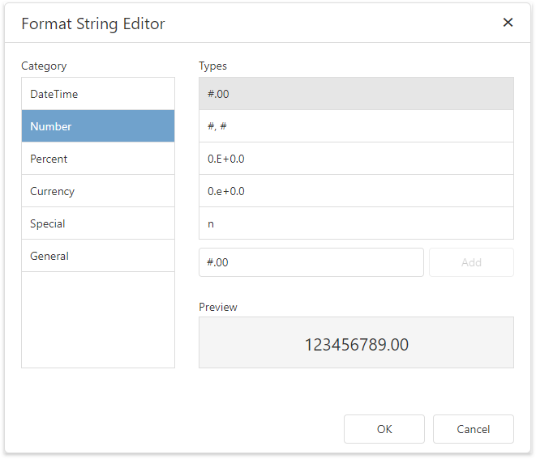
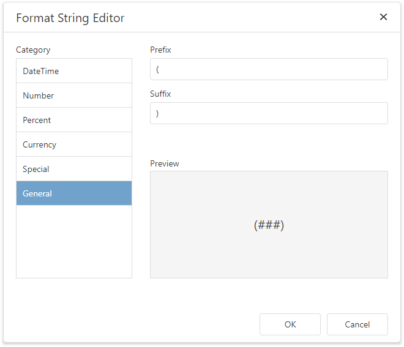
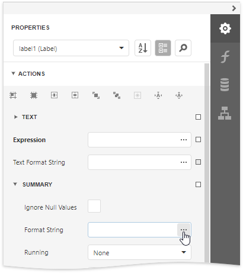

Format String Editor
The Format String Editor provides the capability to apply the required formatting for report elements to display their incoming data. It allows you to easily select one of the built-in formats or create your own. For instance, you can format a numeric value as currency, display a date/time value in one of the standard forms depending on the culture, etc.
Use Standard Formats
The Format String Editor contains numerous built-in formatting presets grouped by categories.

All categories are displayed in the Category list on the left side. The Types list on the right side contains formats available within the selected category. The editor also allows you to see the preview of the selected format in the Preview section.
Use General Formats
In the General category, you can enter the Prefix and Suffix specifying custom text that will be added before and after the output value, respectively.

Create Custom Formats
To create a custom format, enter the format string in the dedicated editor and click Add. The format will be added to the end of the Types list and automatically selected.

You can then remove a custom format by clicking the corresponding  button.
button.
Run the Format String Editor
You can invoke the Format String Editor to format values of a control's bindable properties (not the control's static content) and summary values.
Basic Formatting
It is common to format an Label's Label Text property. To do this, expand the Tasks or Data category and click the ellipsis button for the Text Format String property.

Formatting Summaries
When a summary function is applied to a control's dynamic content, value formatting is specified separately. To do this, expand the Label Tasks or Data category. Then, in the Summary section, click the ellipsis button for the Format String property.

The summary format has priority over the general value format.